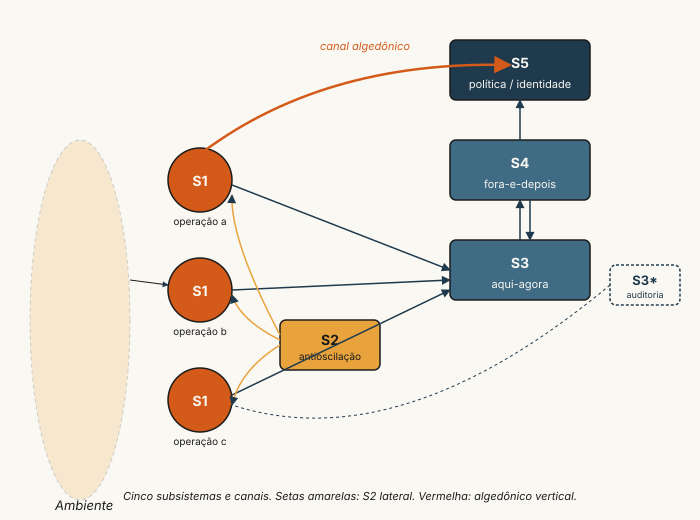
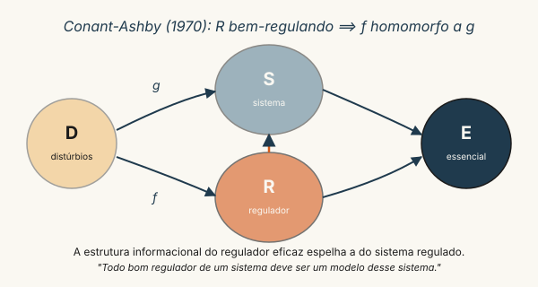

VSM como linguagem integradora
Fase 4 — Capítulo-âncora (Ashby, Beer, Juliana)
A pergunta operacional
Por que três fases técnicas — Strogatz, Markov, Sterman — convergem para o Modelo do Sistema Viável (VSM) de Beer (1979) e não para qualquer outra ontologia organizacional? A resposta curta: porque o VSM é a única arquitetura que torna operável a Lei da Variedade Requisita de Ashby (1956). Operável no sentido literal: oferece cinco posições de observação (S1–S5) e seis canais de informação que, em conjunto, permitem ao analista responder à pergunta diagnóstica fundamental — este sistema absorve a variedade que precisa absorver para permanecer viável? — com algo mais consistente do que a intuição.
Este capítulo articula três pontos: (i) o que cada fase técnica anterior contribui para a linguagem do VSM; (ii) como a obra de Juliana Mariano Alves traduz essa linguagem para a governança hídrica brasileira (BHRF — Bacia Hidrográfica do Rio Formoso, Tocantins); (iii) o que isso implica para a pesquisa-cenário do curso — a comparação ficcional, conduzida por Joana Beraldo, entre a UNITINS (Palmas-TO, EaD via UAB) e a UNIFAL-MG (Alfenas, presencial) como dois sistemas viáveis com a mesma função-fim e arquiteturas opostas (vide Personagem).
A Lei da Variedade Requisita, formalizada
Ashby (1956) (cap. 11) apresenta a Lei em duas formas equivalentes. Na forma multiplicativa, em termos de cardinalidades dos conjuntos de estados:
\[ V_R \cdot V_O \;\geq\; V_D, \tag{1}\]
ou, tomando logaritmos (i.e., trabalhando com entropia de Shannon das distribuições correspondentes), na forma aditiva:
\[ H(O) \;\geq\; H(D) - H(R), \tag{2}\]
onde \(H(D)\) é a entropia do conjunto de distúrbios, \(H(R)\) a entropia do regulador, e \(H(O)\) a entropia residual do resultado. Em palavras: para manter o estado essencial dentro de uma faixa \(H(O)\) aceitável diante de distúrbios de entropia \(H(D)\), o regulador precisa exibir entropia \(H(R)\) ao menos igual ao excesso \(H(D) - H(O)\). No restante do capítulo, “variedade” sem qualificação refere-se à forma logarítmica (entropia), seguindo a convenção da literatura cibernética contemporânea.
A leitura cibernética importante é que a variedade não é um mau a combater; é o orçamento de complexidade que precisa fluir. O regulador pode (a) ampliar sua própria variedade \(H(R)\), (b) atenuar a variedade do distúrbio \(H(D)\), ou (c) alargar a faixa do resultado tolerável \(H(O)\). Toda intervenção institucional é uma combinação desses três movimentos. Uma agência reguladora que cria zoneamento (atenua \(H(D)\)), contrata fiscais especializados (amplia \(H(R)\)) e aceita uma faixa maior de variação no indicador (alarga \(H(O)\)) está, simultaneamente, exercendo as três alavancas.
Os cinco subsistemas e os canais

O VSM opera com cinco subsistemas funcionais e seis canais. Não são “níveis hierárquicos” — são funções recursivas que coexistem em qualquer sistema viável:
- S1 — Operação. Cada divisão autônoma que produz a saída-fim do sistema. Em uma bacia hidrográfica, cada outorga ativa é um S1; em um Estado, cada política finalística é um S1.
- S2 — Antioscilação. Coordenação lateral que impede S1s de oscilarem entre si por uso conflitante de recursos compartilhados. É a função de clearing house.
- S3 — Otimização aqui-agora. Aloca recursos entre S1s, monitora desempenho, intervém. S3* (auditoria) é o canal esporádico de verificação direta usado quando o canal regular S3↔︎S1 falha.
- S4 — Fora-e-depois. Inteligência: monitora o ambiente externo e o futuro, prepara adaptações.
- S5 — Política/identidade. Define o que o sistema é e o que se recusa a ser. Resolve dilemas que S3 e S4 não resolvem.
O sinal algedônico (do grego algos, dor; hedos, prazer) é o canal vertical de baixíssima banda que conecta diretamente S1 a S5 em emergência, contornando S2/S3/S4. É a função do “alarme” — em organizações, tipicamente o telefone direto do operador para o gabinete da presidência.
Crucialmente, cada S1 é, ele próprio, um sistema viável completo em recursão menor: o sistema \(\mathcal{S}_{n+1}\) está estruturalmente contido no \(\mathcal{S}_n\) que o opera, com seus próprios cinco subsistemas internos. Esta é a propriedade que falta a quase toda outra ontologia organizacional, e é o que permite ao VSM aplicar-se igualmente à União, ao Estado, ao município, à associação de usuários e ao indivíduo.
O que cada fase técnica oferece ao VSM
| Fase | Conceito-chave | Função no VSM |
|---|---|---|
| Strogatz | ponto fixo, bacia de atração, ciclo-limite, atrator | a homeostase de S1 e a dinâmica de S2 |
| Markov | distribuição estacionária, tempo de mistura, reversibilidade | medida formal de \(H(D)\) e do tempo de absorção |
| Sterman | estoque, fluxo, laço de feedback, modos canônicos | linguagem de S3 — alocação, atrasos, bullwhip institucional |
A Fase 1 dá a geometria; a Fase 2 dá a métrica; a Fase 3 dá a álgebra das interações. O VSM é o que organiza as três numa única linguagem diagnóstica.
Aplicação à pesquisa-cenário (UNITINS ↔︎ UNIFAL-MG)
A pesquisa de Joana Beraldo (vide Personagem) toma duas universidades públicas brasileiras como sistemas viáveis comparáveis — domínio em que o VSM é particularmente útil porque cada universidade é, ela própria, um sistema viável recursivo (curso ⊂ instituto ⊂ universidade ⊂ rede federal/estadual). Três caminhos imediatos:
- Diagnóstico de uma coordenação de curso como um S1 dentro de um instituto (S2/S3/S4 do instituto, S5 da reitoria). A pergunta diagnóstica é: quais funções estão presentes e quais estão ausentes? No caso UNITINS-EaD, a hipótese de Joana é que S2 (antioscilação entre polos UAB) e S4 (inteligência sobre evasão regional) são as ausências sistemáticas; no caso UNIFAL-presencial, a hipótese-espelho é que S4 está consolidado mas S2 entre departamentos pode falhar em momentos de pressão (Cálculo I como gargalo recorrente).
- Análise de variedade sobre indicadores acadêmicos. O formalismo de Ashby (1956) pode ser instanciado quantitativamente: \(H(D)\) é a entropia da distribuição de perfis discentes (origem geográfica, escolaridade prévia, modalidade de ingresso); \(H(R)\) é a entropia do conjunto de respostas pedagógicas observadas (monitorias, plantões, atendimento por polo). A diferença é a “lacuna de variedade” do sistema-curso.
- Modelagem-como-governança (Alves; Schwaninger, 2025): construir um modelo formal (cadeia de Markov sobre estados de matrícula, ou modelo SD da coorte) cujo propósito não é prever a evasão, mas funcionar como órgão regulador adicional da coordenação — ampliando \(H(R)\) via o canal Conant-Ashby.
A diferença prática entre “modelagem como descrição” e “modelagem como regulação” é o que separa pesquisa-relatório de pesquisa-instrumento. Esta segunda postura é o que Alves; Schwaninger (2025) chama de model-based governance e é, na leitura deste curso, o ponto de partida natural para qualquer pesquisa em educação superior pública.
Variantes contemporâneas do VSM
A formulação original de Beer (1979) sofreu desdobramentos pela escola contemporânea de cibernética organizacional. Três variantes importam para este curso:
Espinosa-Walker — abordagem pela complexidade-sustentabilidade. Espinosa; Walker (2017) reformula VSM para análise de organizações complexas operando em ambientes de alta entropia ambiental, com ênfase explícita em sustentabilidade e adaptação ecológica. A contribuição central é tratar S4 não como módulo singular mas como conjunto de processos de aprendizagem distribuídos pelos níveis de recursão. Em termos práticos: S4 da BHRF (cap. F4-02) não é uma sala única no edifício da Naturatins, mas a soma dos processos de monitoramento de tendências hídricas, sociais e climáticas que cruzam os três níveis de recursão da governança.
Espejo-Reyes — managing complexity. Espejo; Reyes (2011) sistematiza ferramentas operacionais de VSM-aplicado: questionários estruturais, diagramas de variedade, mapeamentos de canal. Texto de referência para diagnósticos institucionais em PT-BR não-traduzido (mas com leitura intermediária acessível). Contribuição metodológica: o modelo de transformação — cada S1 caracterizado por entrada-transformação-saída-recursos com unidade explícita.
Schwaninger — modelagem multinível. Schwaninger (2009) desenvolve “Intelligent Organizations” articulando VSM com cibernética de segunda ordem e teoria dos sistemas inteligentes. Em parceria com Alves (Alves; Schwaninger (2025)), opera o argumento de model-based governance (próxima seção): VSM como linguagem operacional para construção de modelos formais que ampliam \(H(R)\) explicitamente.
A escolha do curso é mantê-las como variantes irmãs, não rivais. Quem domina Beer 1972/1979/1985 lê Espinosa-Walker e Espejo-Reyes sem reaprendizagem; cada autor adiciona ângulo, não rivaliza.
O programa Conant-Ashby formalizado
O teorema de Conant-Ashby (Conant; Ashby, 1970) tem enunciado modesto e implicação radical:
Todo bom regulador de um sistema deve ser um modelo desse sistema.
A versão informal é o que se cita; a versão formal merece atenção. Sejam \(D\) a fonte de distúrbios, \(S\) o sistema regulado, \(R\) o regulador, e \(E\) o resultado essencial-a-preservar. O teorema demonstra que se \(R\) minimiza a entropia residual \(H(E)\) — isto é, regula bem — então a aplicação \(f: D \to R\) que define a estratégia do regulador é homomórfica à aplicação \(g: D \to E\) que descreve a influência dos distúrbios sobre o essencial. Em palavras: a estrutura informacional do regulador eficaz espelha a estrutura informacional do sistema regulado.
Não é “o regulador precisa entender o sistema”. É afirmação técnica: existe homomorfismo entre as duas estruturas, e qualquer regulador ótimo é esse homomorfismo.

Implicações:
- Reguladores que não modelam o sistema falham necessariamente. Não é questão de competência — é teorema. Política pública sem modelo do problema regulado é, formalmente, sub-ótima.
- Modelos sem propósito regulador são modelos descritivos, não cibernéticos. A distinção operacional vem na próxima seção.
- A modelagem é a regulação. Não há etapa intermediária — construir o modelo correto é configurar o regulador. É o que Alves; Schwaninger (2025) explora explicitamente ao caso BHRF.
Modelagem como descrição vs como regulação
A taxonomia útil em três colunas:
| Descrição clássica | Descrição cibernética | Regulação Conant-Ashby | |
|---|---|---|---|
| Propósito | Representar o sistema fielmente | Identificar regularidades operacionais | Funcionar como órgão regulador adicional |
| Métrica de sucesso | Acurácia preditiva | Capacidade explicativa | Ampliação de \(H(R)\) do tomador de decisão |
| Validação | Comparação com dados | Coerência interna + parsimônia | Redução observada de \(H(O)\) no sistema regulado |
| Falha característica | Modelo se distancia dos dados | Modelo é coerente mas estéril | Modelo é correto mas o regulador não o usa |
| Exemplo no curso | Modelo logístico (F1-01) descrevendo crescimento populacional | CLD de Sterman (F3-02) diagnosticando bullwhip | Modelo SD de coordenação UAB-UNITINS para reduzir evasão |
A diferença prática entre coluna 1 e coluna 3 é o que separa pesquisa-relatório de pesquisa-instrumento. A pesquisa-cenário do curso (Joana, UNITINS↔︎UNIFAL) trabalha deliberadamente na coluna 3: o diagnóstico VSM da coordenação não pretende ser apenas correto — pretende, ao ser assimilado pela coordenação, mudar a operação dela. Esse é o ponto de partida natural para qualquer pesquisa em educação superior pública que queira ser tomada a sério pelo gestor do sistema estudado.
A obra de Juliana Mariano Alves: por que ancora este curso
A escolha de Alves (2022) como referência-âncora não é arbitrária. Três motivos:
- Trata-se da aplicação brasileira mais sofisticada do VSM disponível em literatura revisada por pares. A tese de 2022 (UFT, orientada por Vergara, coorientada por Schwaninger) faz diagnóstico VSM da governança da BHRF em recursão tripla (federal/estadual/usuários), com identificação nominal de funções ausentes (S2 inter-outorgantes, S4 inteligência climática), e propõe redesenho institucional.
- Conecta o VSM ao programa Conant-Ashby via Alves; Schwaninger (2025), oferecendo ao aluno o caminho técnico de modelagem como regulação, não modelagem como descrição. Esta é leitura que parte da literatura SD americana ainda não fez explicitamente — Sterman trata validação como acurácia preditiva, e a inflexão Conant-Ashby ainda é minoritária mesmo na escola que ele fundou.
- Traduz “variety engineering” (Alves, 2025) em vocabulário operacional para gestores brasileiros, sem perder o rigor de Beer (1979) nem o de Espinosa; Walker (2017). Isso é exatamente o que falta na literatura nacional de administração pública: ponte entre teoria cibernética rigorosa e aplicação a sistemas governamentais reais.
Inserção internacional da autora reforça a escolha: Member-at-Large da American Society for Cybernetics pelo Sul Global (mandato desde jan/2024), Diretório do Metaphorum (UK, 2023), apresentação no ASC 2024 (60th Anniversary, Washington DC) — vide Personagem.
O caso BHRF em parágrafo
A peça central dos memorandos é o caso BHRF: bacia hidrográfica do Rio Formoso (Tocantins) sob estresse hídrico crescente desde 2010, com o Ministério Público estadual em ação civil pública desde 2016 por uso conflitante, criação do Grupo de Acompanhamento e Negociação (GAN), e a tese de Alves diagnosticando S2/S3/S4 ausentes e propondo redesenho. O capítulo seguinte (F4-02) reconstrói o caso com detalhe documental e extrai as lições transferíveis para análogos institucionais — incluindo a coordenação de curso UAB-UNITINS que Joana analisa.
Figuras canônicas referenciadas: #fig-vsm-recursão (cinco subsistemas em recursão \(\mathcal{S}_n \supset \mathcal{S}_{n+1}\)) e #fig-conant-ashby (homomorfismo regulador-sistema). Pendentes em SVG; vide Recursos > Excalidraw.
Pergunta de verificação
Identifique, na sua experiência educacional concreta (curso em que estuda, coordenação que conhece, polo UAB que frequenta) ou no caso-andaime de Joana (UNITINS ou UNIFAL-MG), um sistema concreto (um curso, uma disciplina-marco, um indicador acadêmico) que você queira diagnosticar. Em um parágrafo: (a) descreva-o como um sistema viável de uma recursão escolhida (qual é o S1?); (b) liste quais dos cinco subsistemas estão claramente presentes e quais estão visivelmente ausentes; (c) estime, qualitativamente, \(H(D)\), \(H(R)\) e \(H(O)\), e diga onde está a lacuna de variedade dominante; (d) proponha uma intervenção do tipo “atenuar \(H(D)\)”, “ampliar \(H(R)\)” ou “alargar \(H(O)\)” e justifique.
Esta pergunta volta na semana 20 (capítulo F4-03), onde será a base do diagnóstico próprio que fecha o curso.
Este capítulo é o farol pedagógico do curso. Releia-o ao iniciar cada nova fase técnica — os conceitos das fases farão sentido em camadas diferentes a cada releitura.